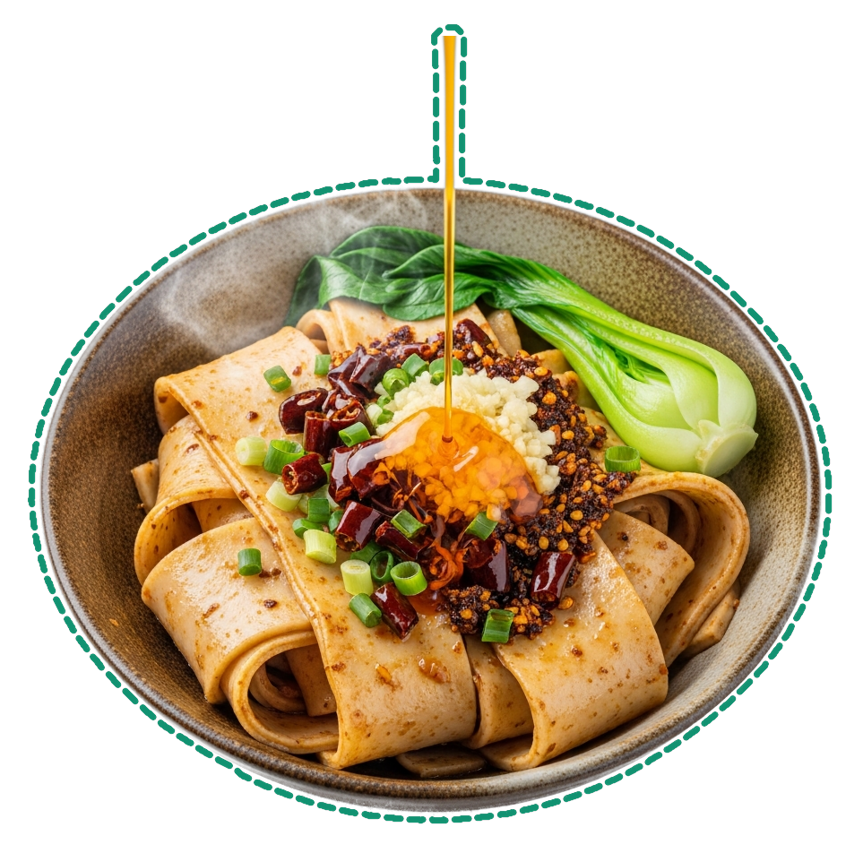

永
5
家
10
影
15
馬
horse
心
heart
月
moon
言
speak
長
long
辶
walk
0
strokes
biáng
how do you type

biángbiáng
😀
🍜
👍
🔥
✨
biáng
面
miàn — noodle
米
mǐ — rice
菜
cài — dish
no entry found
biáng!
Unicode
dinner?
noodles
Menu
noodles
¥28
rice bowl
¥18
Unicode 13.0
2020
stack
tags
stacktags.io
▶ Play
0.0